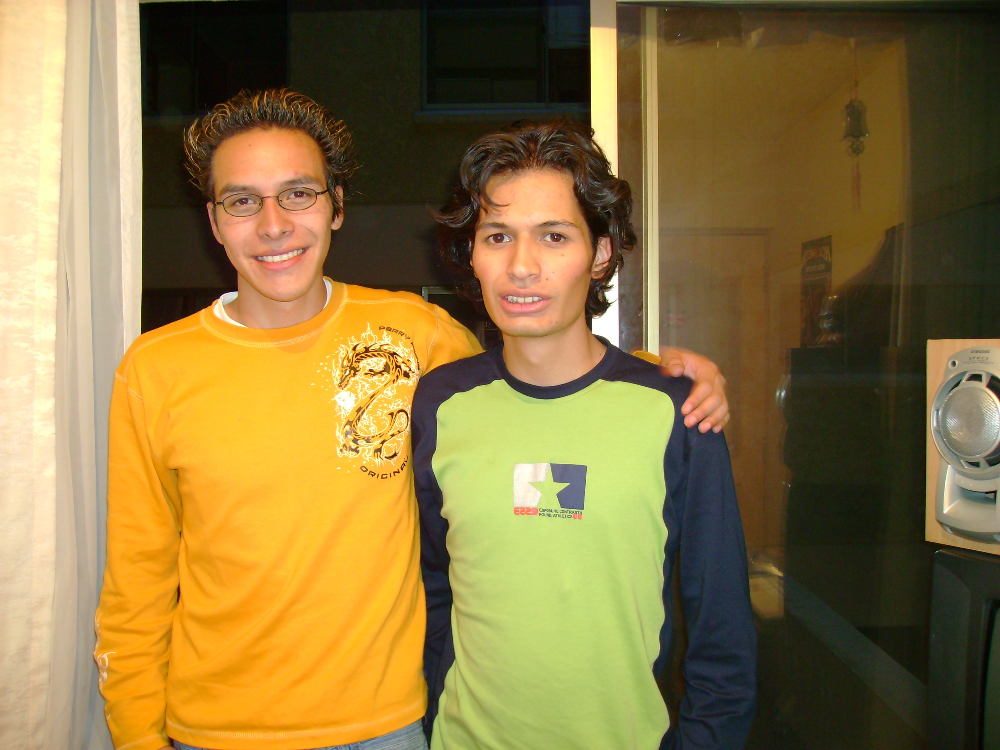

Personas cercanas
En esta sección encontrarás fotografías mías y de personas importantes en mi vida.
Fotos y descripciones
-
Hagar Cayoja... Desde que la conocí mensajeandonos con celulares antiguos sin whatsapp me pareció la mejor persona del mundo, tanto así que acabamos arreglandonos bastante pronto y ya llevamos más de 12 años como pareja. En ese tiempo y hasta ahora siempre pensamos igual, siempre nos apoyamos en las buenas y en las malas, ella es Odontóloga, de hecho la mejor que conocí en mi vida y me devolvió la sonrisa. Vivimos mil y una anécdotas ya que vivímos juntos. trabajamos juntos en emprendimientos y hasta abrimos nuestras propias empresas, hicimos prestamos de dinero y finalmente nos casamos, nos compramos nuestro auto y departamento. Faltarían las palabras para contar todo lo vivido, pero doy gracias a Dios de poder contar con ella en el día a día.
-

Sergio Velasquez... Lo conocí a mis 18 años entrando a la universidad, viajamos juntos junto a otro amigo Efraín Rodriguez desde la ciudad de La Paz hasta Copacabana caminando. De ese modo se hizo mi mejor amigo. Compartimos un sin fin de actividades, viajamos varias veces al carnaval de Oruro, jugamos un juego MMORPG llamado Lineage II durante años, siempre pensamos parecido. Uno de los datos más relevantes es que siempre guitarreabamos y nos alcholizabamos solo los dos y a veces con otras personas. Nos reuníamos para estudiar 4 veces a la semana junto a mis amigos Sergio Campuzano, Jorge Brito, Hugo Arispe, Efraín Rodriguez y otros. Que tiempos... Puedo no verlo un año entero pero siempre lo veo con el mismo cariño.